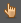
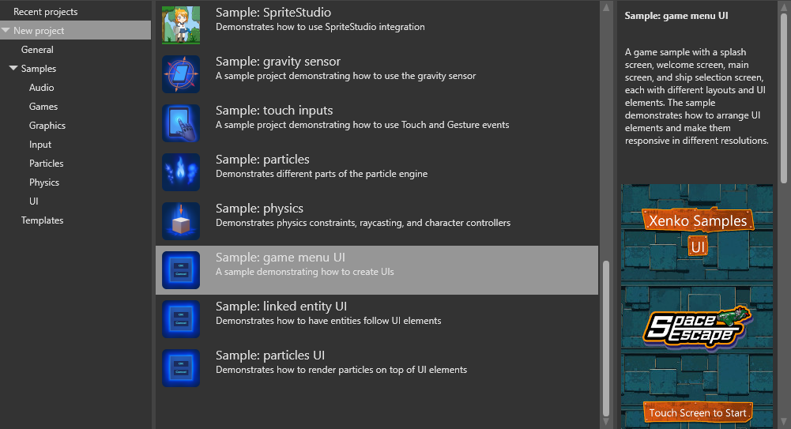

シーンに UI を追加する
初級 アーティスト デザイナー
UI ページを作った後、それをエンティティのコンポーネントとしてシーンに追加します。
シーンエディターで、空のエンティティを作成します。これを行うには、シーンを右クリックして [Empty entity] を選択してください。

プロパティグリッドで、[Add component] をクリックし、[UI] を選択します。

Game Studio は、エンティティに UI コンポーネントを追加します。
[Page] の横にある （アセットの選択）をクリックします。
すると、Select an asset ウィンドウが開きます。
追加したい UI ページを選択し、[OK] をクリックします。
UI ページの作成と編集の方法については、UI エディターをご覧ください。
Tip
エディターで UI がシーンの他の部分を隠してしまうのを防ぐには、プロパティグリッドで UIコンポーネント を無効にします。

ゲームを実行する前に、コンポーネントを再び有効にすることを忘れないでください。そうしないと、Stride はUI を表示しません。
コードで UI ページコンポーネントに UI ページを割り当てる
UIコ ンポーネントの Page プロパティに UI ページを割り当てることができます。
// このプロパティは Game Studio で UI ページアセットから割り当てることができます。
// This property can be assigned from a UI page asset in Game Studio
public UIPage MyPage { get; set; }
protected override void LoadScene()
{
InitializeUI();
}
public void InitializeUI()
{
var rootElement = MyPage.RootElement;
// UIページ内の特定の要素を探す拡張メソッドを使うことができます。
// to look for a specific element in the UI page, extension methods can be used
var button = rootElement.FindVisualChildOfType<Button>("buttonOk");
// UIツリーに "buttonOk" という名前の要素がないか、またはマッチしない場合、
// 前述のメソッドは null を返します。
// if there's no element named "buttonOk" in the UI tree or the type doesn't match,
// the previous method returns null
if (button != null)
{
// Click イベントにデリゲートを割り当てます。
// attach a delegate to the Click event
button.Click += delegate
{
// ここで何らかの作業を行います。
// do something here...
};
}
// UI コンポーネントにページを割り当てます。
// assign the page to the UI component
var uiComponent = Entity.Get<UIComponent>();
uiComponent.Page = MyPage;
}
UI コンポーネントのプロパティ
| プロパティ | 説明 |
|---|---|
| Page | コンポーネントによって表示される UI ページ |
| Full screen | 注意： 他のものは壊れているので、これを使うことをお勧めします。 |
| Resolution | UI の解像度（ピクセル単位） |
| Size | UI コンポーネントの実サイズ（ワールド単位） |
| Resolution stretch | 仮想解像度をどう解釈するか（FixedWithFixedHeight, FixedWithAdaptableHeight, FixedHeightAdaptableWidth のいずれか）。 |
| Billboard | オンにすると、UI は常にカメラのほうを向きます。 注意： 現在の Stride のバージョンでは、これをオフにすると UI テキストエラーが発生します。 |
| Snap text | オンにすると、UI テキストは一番近いパネルにスナップされるようになります。 |
| Fixed size | オンにすると、画面上での UI のサイズを常に固定にします（例：高さが 1 のコンポーネントは、画面での高さは 0.1 になります）。注意： この機能は現在のバージョンの Stride では動作しません。 |
| Render group | UI が使用するレンダーグループ。 |
UI スクリプト
UI をインタラクティブ（対話的）なものにするには、スクリプトを追加します。スクリプトがない UI は、単なる画像です。
Stride で実装されている UI を示す例として、Stride に同梱されている game menu UI サンプルがあります。
